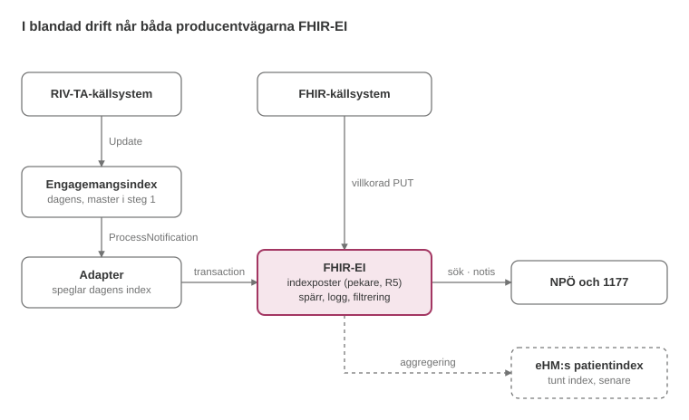

FHIR-baserat engagemangsindex (FHIR-EI)
0.1.0 - ci-build
Sweden
FHIR-baserat engagemangsindex (FHIR-EI)
0.1.0 - ci-build
Sweden
FHIR-baserat engagemangsindex (FHIR-EI) - Lokal utvecklingsbygge (v0.1.0) byggt av FHIR (HL7® FHIR® Standard) Build Tools. Se katalogen över publicerade versioner
Leveransgarantin är minst den samma som idag: en ändring i källsystemet ska nå indexet utan förlust, i rätt ordning per post, och kunna återhämtas efter avbrott. Det gäller både dagens RIV-TA-producenter och framtida FHIR-producenter.
| Krav | Innebörd | Hur det uppfylls |
|---|---|---|
| Idempotens | Samma händelse två gånger ger samma resultat | Uppdatering och avregistrering sker villkorat på producentbunden identifier |
| Ordning per post | Sena eller omkastade händelser skriver inte över nyare | En uppdatering med äldre contentLastUpdated än den lagrade ignoreras. En avregistrering kan bara upphävas av en ny registrering med senare contentLastUpdated |
| Minst en leverans | Ingen händelse går förlorad | Producent eller adapter försöker igen tills FHIR-EI kvitterat. Ej levererbara händelser hamnar i en kö för manuell hantering |
| Atomicitet | En samling ändringar registreras helt eller inte alls | transaction-Bundle |
En ignorerad uppdatering besvaras med 200 OK och den lagrade versionen, med oförändrad ETag. Producenten ser att inget skrevs och försöker inte igen. Samtidiga uppdateringar av samma post hanteras med versionsvillkor (If-Match på ETag) eller med regeln om contentLastUpdated.
Principen är att prenumerationen ger snabbhet och avstämningen ger korrekthet. En konsument ska kunna återställa en korrekt bild även om den missat notiser.
| Fråga | Regel |
|---|---|
| Kan notiser komma flera gånger? | Ja. Varje notis bär ett löpande händelsenummer i SubscriptionStatus. Konsumenten deduplicerar på händelsenummer och postens meta.versionId |
| Garanteras ordning? | Bara per post, via meta.versionId. Konsumenten ignorerar en notis om en äldre version än den den redan har. Ingen ordning garanteras mellan poster |
| Hur upptäcks missade notiser? | Luckor i händelsenumren, uteblivna heartbeat-notiser eller fel vid anrop av $status på prenumerationen |
| Hur återhämtar sig konsumenten? | Kortare avbrott: $events för att hämta missade händelser ur händelseloggen. Längre avbrott: inkrementell avstämning med _lastUpdated inklusive avregistrerade poster. Avbrott längre än gravstenarnas lagringstid, eller ny konsument: $export och full omladdning |
| Hur syns borttag? | Som uppdatering till status superseded eller entered-in-error. Gravstenen finns kvar under lagringstiden, så borttaget syns även vid avstämning |
Två lagringstider ska fastställas. Båda härleds från samma fråga: hur långt avbrott ska en konsument klara utan full omladdning?
| Lagringstid | Vad den styr | Dimensioneras efter |
|---|---|---|
| Händelselogg | Hur långt bakåt en konsument kan hämta missade notiser med $events |
Normala driftavbrott hos konsumenter; kort, eftersom avstämning tar vid efteråt |
| Gravstenar | Hur länge en avregistrerad post syns vid inkrementell avstämning och _since-export |
Det längsta tillåtna avbrottet för alla synkande konsumenter, inklusive en framtida synk mot eHM |
Värdena är en öppen fråga.

RIV-TA-producenter når FHIR-EI via dagens index och adaptern; FHIR-producenter skriver direkt.
Adaptern speglar dagens engagemangsindex utan egen affärslogik. Ansvaret för att indexposterna är korrekta ligger därför kvar hos producenterna, genom deras registrering i dagens engagemangsindex.
Engagemangsposter för samma patient, logiska adress och tjänstedomän slås ihop till en indexpost, med dagens kategorier som informationsmängder. Varje indexpost blir en villkorad PUT i en transaction, med fältmappningen under Mappning till profiler.
| Fält | Regel |
|---|---|
identifier |
System = adapterns endpoint-URL, som för alla producenter. Värdet bildas deterministiskt ur patient, logisk adress och tjänstedomän, så att samma kombination alltid ger samma post |
sourceEndpoint, content.attachment.url |
Endpoint och adress enligt adressregistret nedan |
logicalAddress |
logicalAddress från engagemangsposterna |
sourceSystem |
sourceSystem från de ingående engagemangsposterna |
contentLastUpdated |
Den senaste mostRecentContent bland de ingående engagemangsposterna |
content.profile[category] |
En Coding per kategori bland de ingående engagemangsposterna |
| Avregistrering | deleteFlag på den sista ingående engagemangsposten ger status superseded, registrationStatus withdrawn och deregistrationReason transition-adapter, eftersom dagens kontrakt inte bär någon orsak |
registeringProducer |
Adapterns egen endpoint i tjänstekatalogen |
Tjänstekatalogen har ingen endpoint per logisk adress. Där är den logiska adressen en organisations HSA-id, och organisationen listar sina endpoints i Organization.endpoint. Tjänstekatalogen har inte heller TAK:s uppgift om vilken logisk adress och vilket tjänstekontrakt som routas till vilken producent.
Adaptern håller därför ett eget adressregister, byggt genom att samköra TAK med tjänstekatalogen:
| Nyckel | Värde |
|---|---|
| Logisk adress och tjänstedomän (via tjänstekontrakt i TAK) | Endpoint i tjänstekatalogen som posten ska peka på |
Två varianter är möjliga för värdet:
logicalAddress./fhir/{vg-hsa-id}/). Konsumenten hämtar informationen med FHIR, och bryggan översätter till RIV-TA. Bryggan använder vårdgivarens HSA-id som logisk adress, medan dagens engagemangsposter kan ha vårdenhetens eller källsystemets. Det måste stämmas av mot TAK innan varianten används.Samma tanke finns i EHDS-bryggan, som håller ett eget register från vårdgivare till endpoint.
När ett källsystem börjar registrera direkt i FHIR-EI får dess poster en ny endpoint, och därmed nya poster, eftersom en post gäller patient × endpoint × tjänst. Adaptern avregistrerar då sina poster för källsystemet med deregistrationReason transition-adapter. Prenumeranter ser en avregistrering och en ny registrering för samma information. Om det behövs en operation som flyttar ägarskapet i stället är en öppen fråga.
Se exemplet Indexpost speglad av övergångsadaptern.